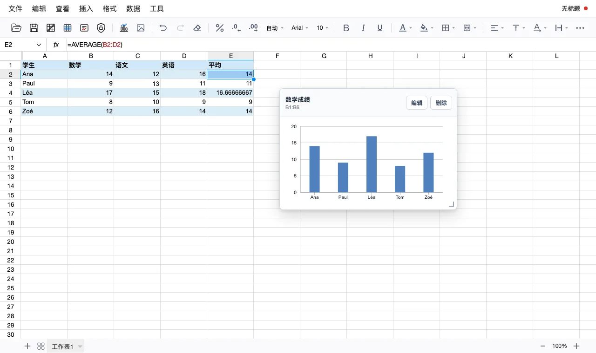

DocCells 用户手册
DocCells 是在浏览器中使用的多语言电子表格，无需安装，无需账户。它可以打开和保存 Excel 工作簿（.xlsx）。

六个基本操作
| 目的 | 操作 |
|---|---|
| 输入 | 单击单元格，键入，Enter（输入数据） |
| 计算 | 键入 = 和公式：=AVERAGE(B2:B6)（公式） |
| 复制公式 | 拖动选区的蓝色手柄，或 Ctrl D（填充） |
| 设置格式 | 格式 菜单或按钮（格式设置） |
| 绘制图表 | 选择数据，（图表） |
| 保存 | Ctrl S：Excel 文件（打开与保存） |
目录
- 打开与保存：文件、最近文件、恢复、Google 表格、语言。
- 界面：菜单、按钮、公式栏、标签、缩放。
- 输入数据，选择、复制、填充。
- 公式，列表与复数，命名区域，工作表。
- 数字格式，格式设置，条件格式，行与列。
- 排序、筛选、查找，复选框、列表与日历，图表与迷你图，图片与链接，打印。
- 为学生保护工作簿，共享与嵌入，与 DocGeo 一起使用。
- 参考：314 个函数，快捷键，与 Excel 的兼容性，常见问题。
约定
- 按钮用其图标表示（ 粗体）。
- 在 Mac 上，Ctrl 指 ⌘。
- 公式使用英文函数名、小数点，参数之间用逗号分隔。
- 搜索手册：/ 或 Ctrl K。词语可按任意顺序输入；输入函数名会找到它所在的行。